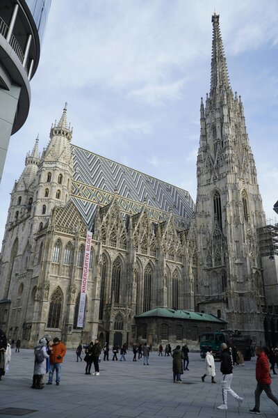

Stephansplatz
The Stephansplatz is a square at the geographical centre of Vienna, Austria. It is named after its most prominent building, the Stephansdom, Vienna's cathedral and one of the tallest churches in the world. Before the 20th century, a row of houses separated Stephansplatz from Stock-im-Eisen-Platz, but since their destruction, the name Stephansplatz started to be used for the wider area covering both. To the west and south, respectively, run the exclusive shopping streets Graben (literally "ditch") and Kärntner Straße ("Kärnten" is the German for Carinthia). Opposite the Stephansdom is the Haas-Haus, a piece of striking modern architecture by Hans Hollein. Although public opinion was originally skeptical about the combination of the mediaeval cathedral and the glass and steel building, it is now considered an example of how old and new architecture can mix harmoniously. 
Karlsplatz
Karlsplatz (German for 'Charles Square') is a town square on the border of the first and fourth districts of Vienna, Austria. It is one of the most frequented and best connected transportation hubs in Vienna. The Karlskirche is located here.
The first district can be reached either by subway (Karlsplatz station) or via Operngasse (a street). The pavilions of the former Karlsplatz Stadtbahn Station remain despite the construction of the U-Bahn system.
Oberlaa Park
The Kurpark Oberlaa is a park in the 10th district of Vienna, Favoriten, on the southeast slope of the Laaer Berg near Oberlaa. Its area is around 608,000 m².
Horticultural monuments, path systems and artificial ground formations are protected as monuments.
After the great success of the "Vienna International Garden Show 1964" (WIG 64) in the Donaupark in Vienna's 22nd district, the Vienna City Council wanted to hold another international garden show in Vienna. The former brick area on the southeast slope of the Laaer Berg, which had also served as a filming location for monumental films from the silent film era, was rounded off by purchasing gardening land and vineyards. It was an ideal location for the project and the associated construction of a large green area. There has been a spa at the Oberlaaer sulphur springs since 1969. After an international competition, which was won by the Frankfurt garden architect Erich Hanke in 1969, working groups of landscape architects from various countries were formed. The best designs from all projects were combined for planning and implementation.